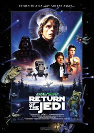

episodio V
segunda pelicula

Es una películadirigida por Irvin Kershner y estrenada por primera vez en Estados unidos el 21 de mayo de 1980 . El guión, basado en una historia de George Lucas fue escrito por Lawrence Kasdan y Leigh Brackett. Aunque en términos cronologicos internos sea la quinta película de la saga Star Wars, en realidad fue la segunda película de la saga en ser estrenada.